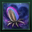

Lost Amoeba
Version
Please help with verifying or updating older sections of this article. At least some were last verified for version 4.3.
This article is for the PC version of Stellaris only.
This article is for the PC version of Stellaris only.
Event chains
Empire event chains
Anomaly event chains
Colony event chains
Primitive civilization event chains
| |
Available only with the Distant Stars DLC enabled. |
Lost Amoeba is an anomaly event chain triggered by investigating the Movement in the Clouds anomaly that can appear on gas giants. Getting the event chain is necessary to unlock the 
{kind=link}
Lost Amoeba

The [science ship name] has located the source of the movement in the upper atmosphere of [gas giant name]. Surprisingly, there was no ship hidden in the clouds, but rather a young Space Amoeba, its mother nowhere to be seen.
There is no way of knowing how this juvenile was separated from its mother or others of its kind, but one thing is certain: it appears to have imprinted on the [science ship name]. As the crew completed their survey of [gas giant name], they found that the Amoeba was following them. It has proven difficult to shake, and [science ship scientist] has taken quite a shine to the youngster's determination.
Our Science Officer suggests allowing the juvenile to follow the vessel, certain we may learn more about Space Amoebas in the process.
There is no way of knowing how this juvenile was separated from its mother or others of its kind, but one thing is certain: it appears to have imprinted on the [science ship name]. As the crew completed their survey of [gas giant name], they found that the Amoeba was following them. It has proven difficult to shake, and [science ship scientist] has taken quite a shine to the youngster's determination.
Our Science Officer suggests allowing the juvenile to follow the vessel, certain we may learn more about Space Amoebas in the process.
Lost Juvenile Amoeba Researchers report that the lost Amoeba juvenile found near [gas giant name] is no longer following our science fleet. After doing so for the past several weeks, the juvenile reportedly entered a hyperlane via some biological hyperdrive capacity. Perhaps it recognized the terrain, or sensed others of its kind. Or perhaps it simply tired of chasing after our ship. Though our ships refrained from interacting with the juvenile as instructed, passive scans have led to some revelations regarding the creature's physiology.
|
Fully FledgedThe Amoeba juvenile that joined our fleet some time ago appears to have reached full maturity. Now an impressive adult, she is no less loyal to the ships that gave her a new home when she was stranded on [gas giant name]. Her time spent with the fleet appears to have encouraged adaptive behaviors not typically found in wild Space Amoebas, making her a more formidable presence on the battlefield than others of her kind. Across [empire name], her image has become something of a mascot for the [empire adjective] spirit. Only one question remains: what should we name her?
|
Juvenile Amoeba Dissection The dissection of the Amoeba juvenile has completed. While large portions of the body were destroyed during the creature's pacification, xenobiological analysis of the remains have revealed remarkable regenerative qualities.
| ||||||||||||
What's in a Name?
What is a mascot without a name? We must devise a moniker worthy of our amoeboid ally.
Trigger conditions:
|
Is triggered only by:
Chose "These are all terrible. We should think of something better." in the previous event. |
Blitz.
Zero.
Deva.
Kos.
Amemba.
Beauregarde.
Old Bluey.
Zeke.
These are all terrible. We should think of something better.
| |
What's in a Name?
We have developed the ability to break the boundaries of space and time, to travel faster than the speed of light. Yet we cannot decide upon a name for this amoeba.
This is our last chance.
This is our last chance.
Trigger conditions:
|
Is triggered only by:
Chose "These are all terrible. We should think of something better." in the previous event. |
Storm.
Ghost.
Cygni.
Vesper.
Arda.
Phaeton.
Wraith.
Rokka.
Enough! Just call it "Fluffy" and be done with it!
| |
CentenarianExciting news from our fleet admirals is being broadcasted over [capital name]. Our adopted Space Amoeba, [lost amoeba name], has just reached an impressive one hundred years of age. Though a grizzled centenarian, it appears age has proven no impediment to our amoeboid ally. In fact, our fleets report [lost amoeba name]'s presence on the battlefield has only grown more formidable over time. [lost amoeba name] has become a force even the best-equipped battleship would have trouble contending with. Seeing her billowing flagella enter a system never fails to lift the [founder species adjective] spirit.
|
Juvenile Amoeba EscapesPending our lack of initiative in securing the Amoeba juvenile for dissection, it appears to have escaped. Sensors report the juvenile engaged some kind of biological hyperdrive and disappeared off the grid, just hours ago.
| ||||||||
Death of an Amoeba News of the death of [lost amoeba name] has rippled through the [empire name], though none have been as affected as Science Officer [science ship scientist]. It was [he or she] who first discovered the Space Amoeba as a lost and helpless juvenile, and watched the creature grow to full maturity under [his or her] own gentle guidance. Now, without [lost amoeba name]'s silent companionship, Officer [science ship scientist] may never be the same again.
|
Death of an AmoebaNews of the death of [lost amoeba name] has rippled through the [empire name]. The amoeba has been a constant companion for our nation for a long time now. However, our necromancers have been unusually active ever since the fateful news came and have now come with a solution to our grieving nation. They won't explain how but they say that they can bring [lost amoeba name] back to us.
| ||||||||
Rise Again
[lost amoeba name] lives?! Or at least she moves. We do not truly understand what our necromancers have done, but thanks to the depths of their despair and madness of their science, our beloved amoeba flies with us once more.
Trigger conditions:
|
Is triggered only by:
Finishing the Reanimate the Lost Amoeba special project |
It hungers.
| |